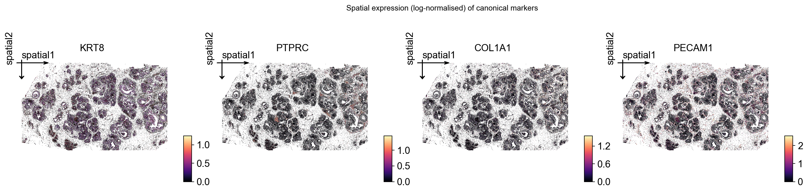
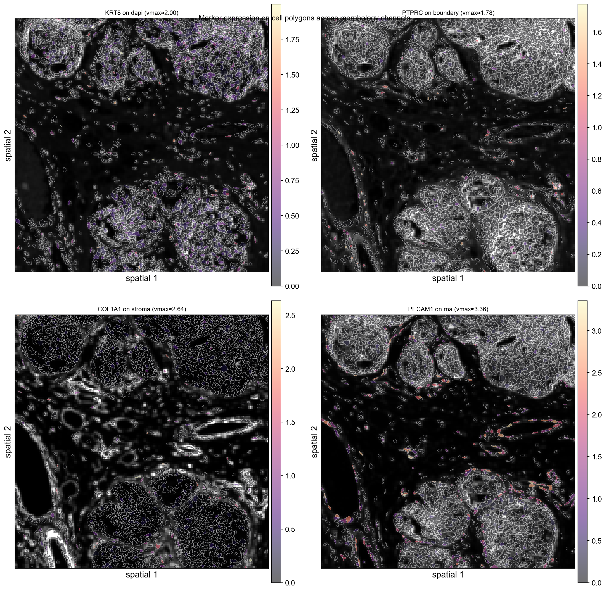

Analyze 10x Atera (WTA Preview) FFPE breast cancer data#
Atera is 10x Genomics’ next-generation, in-situ, whole-transcriptome assay built on top of the Xenium platform. Compared with Xenium’s gene-panel chemistry, Atera v1 expands coverage to ~18,000 human gene targets while keeping the cell-segmentation, polygon, and OME-TIFF morphology imaging that Xenium tutorials are written against.
An Atera outs/ bundle ships a Xenium-format core plus three additions:
File / folder |
Origin |
Notes |
|---|---|---|
|
shared |
gene × cell sparse counts (10x HDF5) |
|
shared |
per-cell metadata + centroids (microns) |
|
shared |
per-cell polygon vertices |
|
shared |
pipeline metadata (JSON) |
|
Atera-only |
per-cell nucleus polygon vertices |
|
Atera-only |
named multi-stain images (DAPI, ATP1A1+CD45+E-Cad, 18S, αSMA+Vim) |
|
optional |
vendor-shipped cell-type classifier (cell_id → group → display color) |
|
optional |
registered H&E whole-slide image and 3×3 affine |
OmicVerse’s ov.io.spatial.read_atera mirrors read_xenium plus loaders for the four Atera-only items. This notebook walks through:
loading an Atera FFPE breast-cancer bundle into a single
AnnData,inspecting the four morphology stain channels,
plotting the vendor-supplied cell-type segmentation in spatial coords,
zooming into a small region with
ov.pl.spatialsegto render cell polygons,running standard preprocessing (filter, normalize, HVG, PCA),
plotting per-gene spatial expression for canonical breast-cancer markers.
Environment setup#
import omicverse as ov
ov.style(font_path='Arial')
%load_ext autoreload
%autoreload 2
🔬 Starting plot initialization...
Using already downloaded Arial font from: /tmp/omicverse_arial.ttf
Registered as: Arial
🧬 Detecting GPU devices…
✅ NVIDIA CUDA GPUs detected: 1
• [CUDA 0] NVIDIA H100 80GB HBM3
Memory: 79.1 GB | Compute: 9.0
____ _ _ __
/ __ \____ ___ (_)___| | / /__ _____________
/ / / / __ `__ \/ / ___/ | / / _ \/ ___/ ___/ _ \
/ /_/ / / / / / / / /__ | |/ / __/ / (__ ) __/
\____/_/ /_/ /_/_/\___/ |___/\___/_/ /____/\___/
🔖 Version: 2.1.2rc1 📚 Tutorials: https://omicverse.readthedocs.io/
✅ plot_set complete.
ov.settings.cpu_gpu_mixed_init()
CPU-GPU mixed mode activated
Available GPU accelerators: CUDA
Inspect the Atera bundle#
Atera ships its primary outputs as a single outs.zip. For tutorials we extract the small files (matrices, parquet, JSON) plus the four morphology focus channels — the giant morphology.ome.tif (~15 GB, full multi-z stack) and transcripts.parquet (~10 GB) are not needed for cell-level downstream analysis.
Companion files (cell_groups CSV, H&E image + alignment CSV) sit next to outs/ in the public 10x dataset page rather than inside it.
from pathlib import Path
ATERA = Path("data/atera_breast_cancer")
# Show top-level files + the morphology_focus channel TIFFs (skip GB-scale OME-TIFFs).
for p in sorted(ATERA.iterdir()):
if p.is_dir():
print(f" {p.name}/")
for k in sorted(p.iterdir()):
print(f" {k.name} ({k.stat().st_size / 1024**2:,.1f} MB)")
else:
size_mb = p.stat().st_size / 1024**2
# Skip the multi-GB H&E OME-TIFF and outs.zip from the printout.
if size_mb < 500:
print(f" {p.name} ({size_mb:,.1f} MB)")
else:
print(f" {p.name} ({size_mb / 1024:,.1f} GB) # large, not loaded directly")
WTA_Preview_FFPE_Breast_Cancer_cell_groups.csv (7.2 MB)
WTA_Preview_FFPE_Breast_Cancer_he_alignment.csv (0.0 MB)
WTA_Preview_FFPE_Breast_Cancer_he_image.ome.tif (16.5 GB) # large, not loaded directly
WTA_Preview_FFPE_Breast_Cancer_keypoints.csv (0.0 MB)
WTA_Preview_FFPE_Breast_Cancer_outs.zip (51.4 GB) # large, not loaded directly
analysis.tar.gz (72.3 MB)
cell_boundaries.parquet (15.4 MB)
cell_feature_matrix.h5 (379.7 MB)
cells.parquet (3.4 MB)
experiment.xenium (0.0 MB)
metrics_summary.csv (0.0 MB)
morphology_focus/
ch0000_dapi.ome.tif (1,224.5 MB)
ch0001_atp1a1_cd45_e-cadherin.ome.tif (1,309.9 MB)
ch0002_18s.ome.tif (1,324.1 MB)
ch0003_alphasma_vimentin.ome.tif (1,169.8 MB)
nucleus_boundaries.parquet (14.1 MB)
Load the dataset with read_atera#
read_atera returns an AnnData with:
X: cells × genes sparse counts (control probes / codewords are dropped automatically; onlyGene Expressionfeatures are kept).obsm['spatial']: cell centroids in microns.obs: cells.parquet metadata, plusgeometry(cell polygon WKT),nucleus_geometry(nucleus polygon WKT), and — whencell_groups_csvis passed —cell_groupandcell_group_colorcolumns from the vendor’s classifier.uns['spatial'][library_id]:images['hires'](the chosen morphology channel), scalefactors that map microns → image pixels, and the fullexperiment.xeniummetadata dict.
We start by selecting the dapi channel for the morphology image. Atera multi-channel selection accepts either a semantic tag ('dapi', 'boundary', 'rna', 'stroma'), a substring ('cd45', '18s'), or an integer-as-string index ('0'–'3').
adata = ov.io.spatial.read_atera(
ATERA,
image_key='dapi',
image_max_dim=2048,
cell_groups_csv=ATERA / 'WTA_Preview_FFPE_Breast_Cancer_cell_groups.csv',
cache_file=ATERA / 'atera_dapi.h5ad',
)
adata
[Atera] Reading Atera data from: /scratch/users/steorra/analysis/omicverse_dev/omicverse-test/notebooks/data/atera_breast_cancer
[Atera] Loaded morphology channel ch0000_dapi.ome.tif (876, 1454) (downsample 0.0312)
[Atera] Loaded cell polygons for 170057/170057 cells
[Atera] Loaded nucleus polygons for 168335/170057 cells
[Atera] Merged cell_groups: 170057/170057 cells from WTA_Preview_FFPE_Breast_Cancer_cell_groups.csv
[Atera] Wrote cache AnnData to: /scratch/users/steorra/analysis/omicverse_dev/omicverse-test/notebooks/data/atera_breast_cancer/atera_dapi.h5ad
[Atera] Done (n_obs=170057, n_vars=18028, library_id=WTA Breast Cancer (FFPE))
AnnData object with n_obs × n_vars = 170057 × 18028
obs: 'transcript_counts', 'control_probe_counts', 'genomic_control_counts', 'control_codeword_counts', 'unassigned_codeword_counts', 'deprecated_codeword_counts', 'total_counts', 'cell_area', 'nucleus_area', 'nucleus_count', 'segmentation_method', 'geometry', 'nucleus_geometry', 'cell_group', 'cell_group_color'
var: 'gene_ids', 'feature_types', 'genome'
uns: 'spatial', 'omicverse_io'
obsm: 'spatial'
The experiment.xenium metadata is preserved verbatim under uns['spatial']['<library>']['metadata']. The pixel_size field (in microns) defines how spatial centroids are converted into image-pixel coordinates downstream.
library_id = list(adata.uns['spatial'].keys())[0]
meta = adata.uns['spatial'][library_id]['metadata']
for k in ['run_name', 'region_name', 'preservation_method', 'panel_name',
'panel_num_targets_predesigned', 'chemistry_version', 'pixel_size',
'num_cells', 'transcripts_per_cell']:
print(f" {k:30s} {meta.get(k)}")
run_name WTA Preview
region_name WTA Breast Cancer (FFPE)
preservation_method FFPE
panel_name Human WTA (pre-release)
panel_num_targets_predesigned 18028
chemistry_version Atera v1
pixel_size 0.2125
num_cells 170057
transcripts_per_cell 2116
Quick QC: per-cell distributions#
Atera’s cells.parquet already carries per-cell transcript_counts, cell_area, and nucleus_count. A first sanity check is to verify the distributions look reasonable: a mean of ~2,000 transcripts/cell with cell areas in the tens of µm² is typical for Atera v1.
import matplotlib.pyplot as plt
import numpy as np
import pandas as pd
fig, axes = plt.subplots(1, 4, figsize=(15, 3.2))
for ax, (col, log) in zip(axes, [
('transcript_counts', True),
('cell_area', False),
('nucleus_area', False),
('nucleus_count', False),
]):
vals = adata.obs[col].astype(float).to_numpy()
if log:
vals = np.log10(vals + 1)
ax.set_xlabel(f'log10({col} + 1)')
else:
ax.set_xlabel(col)
ax.hist(vals, bins=60, color='#4477aa', edgecolor='white', linewidth=0.3)
ax.set_ylabel('cells')
ax.spines[['right', 'top']].set_visible(False)
fig.suptitle(f'Per-cell QC ({adata.n_obs:,} cells)', y=1.02)
fig.tight_layout()
plt.show()

Inspect the four morphology channels#
Atera ships morphology imaging as four separate stain channels rather than a single composite. Each channel is a standalone OME-TIFF pyramid:
Channel |
Stain |
Purpose |
|---|---|---|
|
DAPI |
nucleus |
|
ATP1A1 + CD45 + E-Cadherin |
cell boundary |
|
18S rRNA |
RNA / cell mass |
|
αSMA + Vimentin |
stromal cells |
We re-read the bundle with each channel in turn. read_atera only loads the morphology image — the matrix and metadata reuse from cache_file are not triggered when re-reading directly from the source path with a different image_key, but image loading is cheap (~15 s per channel at 2048 px max) so we just call it four times.
channel_keys = [('dapi', 'DAPI (nucleus)'),
('boundary', 'ATP1A1 / CD45 / E-Cadherin (cell boundary)'),
('rna', '18S rRNA'),
('stroma', 'αSMA / Vimentin (stroma)')]
channel_imgs = {}
for key, _ in channel_keys:
a = ov.io.spatial.read_atera(
ATERA, image_key=key, image_max_dim=2048,
load_boundaries=False, load_nucleus_boundaries=False,
)
channel_imgs[key] = a.uns['spatial'][library_id]['images']['hires']
# Register every channel under a semantic key so ov.pl.spatialseg can use any
# of them as background via `img_key=...`. ov.pl.to_rgb_grayscale converts each
# 2-D channel to a contrast-clipped RGB stack — without this matplotlib's
# default viridis colormap kicks in and washes the per-channel structure into
# a uniform purple background. All four channels share the same
# `tissue_hires_scalef` (loaded at the same `image_max_dim`).
spatial_block = adata.uns['spatial'][library_id]
scalef = spatial_block['scalefactors']['tissue_hires_scalef']
for key, _ in channel_keys:
spatial_block['images'][key] = ov.pl.to_rgb_grayscale(channel_imgs[key])
spatial_block['scalefactors'][f'tissue_{key}_scalef'] = scalef
spatial_block['images']['hires'] = spatial_block['images']['dapi']
print('available background channels:', list(spatial_block['images']))
[Atera] Reading Atera data from: /scratch/users/steorra/analysis/omicverse_dev/omicverse-test/notebooks/data/atera_breast_cancer
[Atera] Loaded morphology channel ch0000_dapi.ome.tif (876, 1454) (downsample 0.0312)
[Atera] Done (n_obs=170057, n_vars=18028, library_id=WTA Breast Cancer (FFPE))
[Atera] Reading Atera data from: /scratch/users/steorra/analysis/omicverse_dev/omicverse-test/notebooks/data/atera_breast_cancer
[Atera] Loaded morphology channel ch0001_atp1a1_cd45_e-cadherin.ome.tif (876, 1454) (downsample 0.0312)
[Atera] Done (n_obs=170057, n_vars=18028, library_id=WTA Breast Cancer (FFPE))
[Atera] Reading Atera data from: /scratch/users/steorra/analysis/omicverse_dev/omicverse-test/notebooks/data/atera_breast_cancer
[Atera] Loaded morphology channel ch0002_18s.ome.tif (876, 1454) (downsample 0.0312)
[Atera] Done (n_obs=170057, n_vars=18028, library_id=WTA Breast Cancer (FFPE))
[Atera] Reading Atera data from: /scratch/users/steorra/analysis/omicverse_dev/omicverse-test/notebooks/data/atera_breast_cancer
[Atera] Loaded morphology channel ch0003_alphasma_vimentin.ome.tif (876, 1454) (downsample 0.0312)
[Atera] Done (n_obs=170057, n_vars=18028, library_id=WTA Breast Cancer (FFPE))
available background channels: ['hires', 'dapi', 'boundary', 'rna', 'stroma']
fig, axes = plt.subplots(2, 2, figsize=(12, 12))
for ax, (key, title) in zip(axes.flat, channel_keys):
img = channel_imgs[key]
# Per-channel 99th-percentile contrast clip — Atera stains have a long tail
# of bright outliers that flatten the rest of the image if not clipped.
vmax = np.percentile(img[img > 0], 99) if (img > 0).any() else img.max()
ax.imshow(img, cmap='gray', vmin=0, vmax=vmax)
ax.set_title(f'{key}: {title}', fontsize=10)
ax.set_xticks([]); ax.set_yticks([])
fig.suptitle(f'Atera morphology focus channels ({img.shape[1]}×{img.shape[0]} px)',
y=0.94, fontsize=11)
fig.tight_layout()
plt.show()
{kind=link}
Vendor cell-group spatial map#
Atera ships a CSV mapping every cell_id to a curated cell-type label and a display color (*_cell_groups.csv). The 10x team produces these labels with a downstream classifier on top of the segmentation, and they make a useful sanity reference for our own clustering later.
We plot every cell as a tiny dot using its centroid and the vendor color directly.
print(adata.obs['cell_group'].value_counts().head(10))
print()
print(f"{adata.obs['cell_group'].nunique()} groups in total")
cell_group
11q13 Invasive Tumor Cells 64036
CAFs, DCIS Associated 24442
Luminal-like Amorphous DCIS Cells 13028
Basal-like Structured DCIS Cells 8760
Endothelial Cells 8624
Myoepithelial Cells 8438
Pericytes 8087
T Lymphocytes 8018
CXCL14+ Fibroblasts 4936
Dendritic Cells 4008
Name: count, dtype: int64
20 groups in total
# Pull vendor display colours into uns['cell_group_colors'] so ov.pl.spatial
# uses them as the categorical palette automatically.
ov.pl.sync_categorical_palette(adata, key='cell_group', color_obs='cell_group_color')
ov.pl.spatial(
adata,
color='cell_group',
img_key=None,
size=10,
show=False,
)
plt.gcf().suptitle(f'Vendor cell-group classifier ({adata.n_obs:,} cells, '
f"{adata.obs['cell_group'].nunique()} groups)",
y=1.02, fontsize=11)
plt.show()
{kind=link}
Render cell polygons in a small region#
ov.pl.spatialseg reads the WKT polygons stored in obs['geometry'] and renders each cell as its segmentation outline. Plotting all 170k polygons at once would dwarf the visible features, so we subset to a 1 mm × 1 mm window first.
Background image selection: by registering all four morphology channels under semantic keys ('dapi', 'boundary', 'rna', 'stroma') in uns['spatial'][lib]['images'], ov.pl.spatialseg can render polygons over any channel via img_key=.... For the cell-segmentation view the boundary channel (ATP1A1+CD45+E-Cadherin membrane stain) is the most informative — the polygons trace exactly the structures the stain lights up.
# Pick a 1 mm × 1 mm window centred on the densest tumour patch and reuse
# the same window for both the cell subset and the spatialseg crop_coord —
# this keeps the rendered background image aligned to the polygon extent.
x0, y0 = np.median(adata.obsm['spatial'], axis=0)
crop_window = (x0 - 500, x0 + 500, y0 - 500, y0 + 500) # (x0, x1, y0, y1)
bdata = ov.space.subset_window(adata,
xlim=(crop_window[0], crop_window[1]),
ylim=(crop_window[2], crop_window[3]))
print(f'Subset window: {bdata.n_obs:,} cells')
Subset window: 3,231 cells
fig, axes = plt.subplots(2, 2, figsize=(14, 14))
for i, (ax, (key, label)) in enumerate(zip(axes.flat, channel_keys)):
ov.pl.spatialseg(
bdata,
color='cell_group',
img_key=key,
crop_coord=crop_window,
edges_color='white',
edges_width=0.4,
alpha=0.35, # let the morphology dominate — was 0.85
alpha_img=1.0,
ax=ax,
legend=(i == len(channel_keys) - 1),
show=False,
)
ax.set_title(f'{key}: {label}', fontsize=10)
fig.suptitle('Cell polygons (vendor cell_group) over each morphology channel',
y=0.94, fontsize=12)
plt.tight_layout()
plt.show()

Standard preprocessing#
We follow the Visium HD / Xenium recipe: filter very-low-count cells, normalize counts to a fixed total, log-transform, and select highly-variable genes. The Atera matrix is dense enough (median ~2k counts/cell) that a count-based filter is gentle.
adata.layers['counts'] = adata.X.copy()
ov.pp.filter_cells(adata, min_counts=20)
ov.pp.filter_genes(adata, min_cells=10)
ov.pp.normalize_total(adata)
ov.pp.log1p(adata)
print(adata)
🔍 Filtering cells...
Parameters: min_counts≥20
✓ Filtered: 92 cells removed
╭─ SUMMARY: filter_cells ────────────────────────────────────────────╮
│ Duration: 7.8415s │
│ Shape: 170,057 x 18,028 -> 169,965 x 18,028 │
│ │
│ CHANGES DETECTED │
│ ──────────────── │
╰────────────────────────────────────────────────────────────────────╯
🔍 Filtering genes...
Parameters: min_cells≥10
✓ Filtered: 6 genes removed
╭─ SUMMARY: filter_genes ────────────────────────────────────────────╮
│ Duration: 8.7565s │
│ Shape: 169,965 x 18,028 -> 169,965 x 18,022 │
│ │
│ CHANGES DETECTED │
│ ──────────────── │
╰────────────────────────────────────────────────────────────────────╯
🔍 Count Normalization:
Target sum: median
Exclude highly expressed: False
✅ Count Normalization Completed Successfully!
✓ Processed: 169,965 cells × 18,022 genes
✓ Runtime: 1.01s
AnnData object with n_obs × n_vars = 169965 × 18022
obs: 'transcript_counts', 'control_probe_counts', 'genomic_control_counts', 'control_codeword_counts', 'unassigned_codeword_counts', 'deprecated_codeword_counts', 'total_counts', 'cell_area', 'nucleus_area', 'nucleus_count', 'segmentation_method', 'geometry', 'nucleus_geometry', 'cell_group', 'cell_group_color'
var: 'gene_ids', 'feature_types', 'genome'
uns: 'spatial', 'omicverse_io', 'cell_group_colors', 'history_log', 'log1p'
obsm: 'spatial'
layers: 'counts'
ov.pp.highly_variable_genes(adata, n_top_genes=2000, batch_key=None)
adata.raw = adata
adata = adata[:, adata.var['highly_variable']].copy()
print(f'Kept {adata.n_vars} HVGs')
🔍 Highly Variable Genes Selection:
Method: seurat
Target genes: 2,000
⚠️ Gene indices [ 2347 7356 9855 10554] fell into a single bin: normalized dispersion set to 1
💡 Consider decreasing `n_bins` to avoid this effect
📊 Top 2,000 genes correspond to normalized dispersion cutoff: 1.1648
✅ HVG Selection Completed Successfully!
✓ Selected: 2,000 highly variable genes out of 18,022 total (11.1%)
✓ Results added to AnnData object:
• 'highly_variable': Boolean vector (adata.var)
• 'means': Float vector (adata.var)
• 'dispersions': Float vector (adata.var)
• 'dispersions_norm': Float vector (adata.var)
╭─ SUMMARY: highly_variable_genes ───────────────────────────────────╮
│ Duration: 3.8829s │
│ Shape: 169,965 x 18,022 (Unchanged) │
│ │
│ CHANGES DETECTED │
│ ──────────────── │
│ ● VAR │ ✚ dispersions (float) │
│ │ ✚ dispersions_norm (float) │
│ │ ✚ highly_variable (bool) │
│ │ ✚ means (float) │
│ │
│ ● UNS │ ✚ _ov_provenance │
│ │ ✚ hvg │
│ │
╰────────────────────────────────────────────────────────────────────╯
Kept 2000 HVGs
ov.pp.scale(adata)
ov.pp.pca(adata, layer='scaled', n_pcs=50)
adata
╭─ SUMMARY: scale ───────────────────────────────────────────────────╮
│ Duration: 4.2843s │
│ Shape: 169,965 x 2,000 (Unchanged) │
│ │
│ CHANGES DETECTED │
│ ──────────────── │
│ ● UNS │ ✚ REFERENCE_MANU │
│ │ ✚ status │
│ │ ✚ status_args │
│ │
│ ● LAYERS │ ✚ scaled (array, 169965x2000) │
│ │
╰────────────────────────────────────────────────────────────────────╯
🚀 Using GPU to calculate PCA...
NVIDIA CUDA GPUs detected:
📊 [CUDA 0] NVIDIA H100 80GB HBM3
|||||||||||||----------------- 37305/81559 MiB (45.7%)
computing PCA🔍
with n_comps=50
Using CUDA device: NVIDIA H100 80GB HBM3
✅ Using built-in torch_pca for GPU-accelerated PCA
🚀 Using torch_pca PCA for CUDA GPU acceleration
🚀 torch_pca PCA backend: CUDA GPU acceleration (supports sparse matrices)
📊 PCA input data type: ArrayView, shape: (169965, 2000), dtype: float64
🔧 solver_used_in_uns (planned): covariance_eigh
🔧 PCA solver used: covariance_eigh
finished✅ (7.02s)
╭─ SUMMARY: pca ─────────────────────────────────────────────────────╮
│ Duration: 7.3136s │
│ Shape: 169,965 x 2,000 (Unchanged) │
│ │
│ CHANGES DETECTED │
│ ──────────────── │
│ ● UNS │ ✚ pca │
│ │ └─ params: {'zero_center': True, 'use_highly_variable': Tr...│
│ │ ✚ scaled|original|cum_sum_eigenvalues │
│ │ ✚ scaled|original|pca_var_ratios │
│ │
│ ● OBSM │ ✚ X_pca (array, 169965x50) │
│ │ ✚ scaled|original|X_pca (array, 169965x50) │
│ │
╰────────────────────────────────────────────────────────────────────╯
AnnData object with n_obs × n_vars = 169965 × 2000
obs: 'transcript_counts', 'control_probe_counts', 'genomic_control_counts', 'control_codeword_counts', 'unassigned_codeword_counts', 'deprecated_codeword_counts', 'total_counts', 'cell_area', 'nucleus_area', 'nucleus_count', 'segmentation_method', 'geometry', 'nucleus_geometry', 'cell_group', 'cell_group_color'
var: 'gene_ids', 'feature_types', 'genome', 'highly_variable', 'means', 'dispersions', 'dispersions_norm'
uns: 'spatial', 'omicverse_io', 'cell_group_colors', 'history_log', 'log1p', 'hvg', '_ov_provenance', 'status', 'status_args', 'REFERENCE_MANU', 'pca', 'scaled|original|pca_var_ratios', 'scaled|original|cum_sum_eigenvalues'
obsm: 'spatial', 'X_pca', 'scaled|original|X_pca'
varm: 'PCs', 'scaled|original|pca_loadings'
layers: 'counts', 'scaled'
Spatial maps for canonical breast-cancer markers#
With the matrix log-normalised, the same obsm['spatial'] is the natural axis for visualising any gene. We pick four genes that should split cleanly between the cell types in the vendor classifier:
KRT8: luminal-epithelial keratin (DCIS / luminal-like cells).PTPRC: CD45 — pan-immune.COL1A1: collagen — CAF / stromal.PECAM1: CD31 — endothelial.
We use .raw so we can plot any gene that wasn’t selected as HVG.
marker_genes = ['KRT8', 'PTPRC', 'COL1A1', 'PECAM1']
available = [g for g in marker_genes if g in adata.raw.var_names]
print('Available markers:', available)
ov.pl.spatial(
adata,
color=available,
use_raw=True,
img_key=None,
size=10,
vmax='p99.2', # scanpy parses 'p<N>' as the N-th percentile per panel
cmap='magma',
show=False,
)
plt.gcf().suptitle('Spatial expression (log-normalised) of canonical markers',
y=1.02, fontsize=11)
plt.show()
Available markers: ['KRT8', 'PTPRC', 'COL1A1', 'PECAM1']
{kind=link}

Marker spatialseg over each morphology channel#
Re-creating the 1 mm × 1 mm subset on the post-preprocessing matrix lets us overlay marker expression on top of the cell polygons. Instead of fixing the background to DAPI, we pair each marker with a different morphology channel — every panel shows the same polygon set with the same zoom window but a different image behind it, so the multi-channel flexibility of ov.pl.spatialseg(..., img_key=...) is visible at a glance.
Channel pairing (rationale):
Marker |
Background channel |
Why |
|---|---|---|
|
|
epithelial nuclei light up where KRT8 is expressed |
|
|
CD45 lives in the boundary stain itself |
|
|
both highlight stromal compartment |
|
|
endothelial cells stand out against generic RNA |
ov.pl.spatialseg doesn’t parse the 'p99.2' percentile string (only ov.pl.spatial does), so we compute the per-gene 99.2-th percentile up front and pass it through as a float vmax.
bdata = ov.space.subset_window(adata,
xlim=(crop_window[0], crop_window[1]),
ylim=(crop_window[2], crop_window[3]))
print(f'Subset for spatialseg: {bdata.n_obs:,} cells')
# Re-attach the multi-channel uns so spatialseg can find each `img_key`.
bdata.uns['spatial'] = adata.uns['spatial']
# Materialise per-gene log-normalised expression onto bdata.obs so spatialseg
# can colour polygons directly. p99.2 vmax per gene clips the bright tail.
raw = adata.raw.to_adata()
raw_b = raw[bdata.obs_names].copy()
for gene in available:
bdata.obs[f'{gene}_expr'] = raw_b[:, gene].X.toarray().ravel()
# Pair each marker with a different morphology channel — see the markdown
# above for the rationale. Order matches `available`: KRT8/PTPRC/COL1A1/PECAM1.
pairings = list(zip(available, ['dapi', 'boundary', 'stroma', 'rna']))
fig, axes = plt.subplots(2, 2, figsize=(14, 14))
for ax, (gene, ch) in zip(axes.flat, pairings):
expr = bdata.obs[f'{gene}_expr'].to_numpy()
nz = expr[expr > 0]
vmax_val = float(np.percentile(nz, 99.2)) if nz.size else float(expr.max() or 1.0)
ov.pl.spatialseg(
bdata,
color=f'{gene}_expr',
img_key=ch,
crop_coord=crop_window,
edges_color='white',
edges_width=0.4,
alpha=0.55,
alpha_img=1.0,
cmap='magma',
vmax=vmax_val,
ax=ax,
show=False,
)
ax.set_title(f'{gene} on {ch} (vmax≈{vmax_val:.2f})', fontsize=10)
fig.suptitle('Marker expression on cell polygons across morphology channels',
y=0.94, fontsize=12)
plt.tight_layout()
plt.show()
Subset for spatialseg: 3,230 cells
{kind=link}

Summary#
In this notebook we used omicverse.io.spatial.read_atera to:
load a 170,057-cell × 18,028-gene Atera v1 FFPE breast-cancer dataset into a single
AnnData,inspect Atera’s four-channel morphology focus stack (DAPI / boundary / 18S / stroma),
merge the vendor
cell_groups.csvclassifier directly intoobs,render cell polygons via
ov.pl.spatialsegfor region-of-interest views,run a standard normalize → HVG → PCA preprocessing pipeline,
map canonical breast-cancer markers (KRT8, PTPRC, COL1A1, PECAM1) in physical space.
Atera’s outs/ layout is a strict superset of Xenium’s, so any downstream OmicVerse spatial workflow (ov.space.svg, ov.pl.spatial, neighborhood graphs, leiden clustering, cell-cell communication) works without modification — read_atera is the only thing that has to know about the extras (nucleus polygons, channel-named morphology, cell-group CSV, optional H&E + alignment).